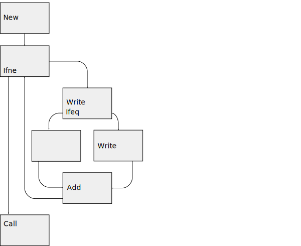
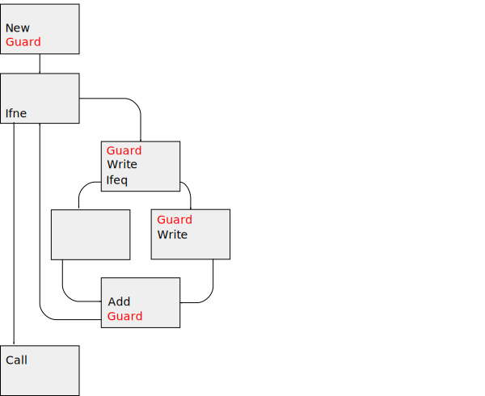
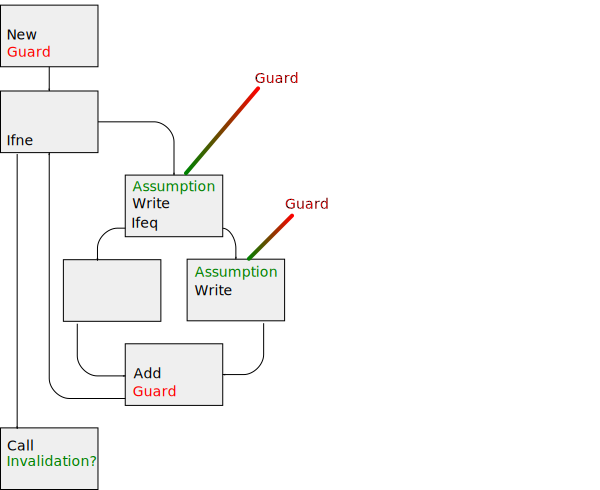
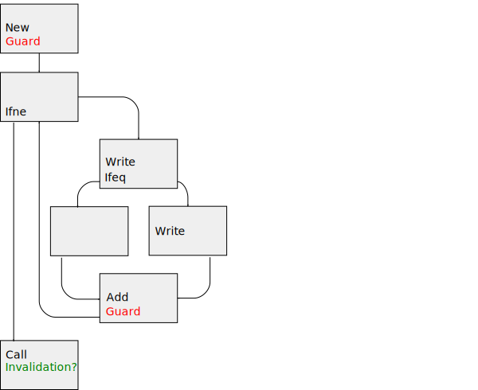
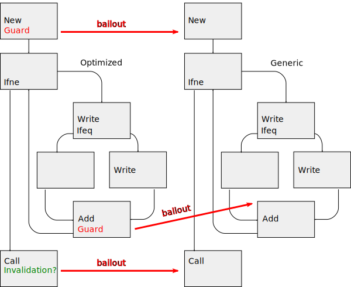
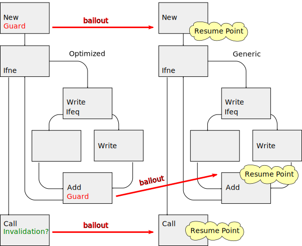
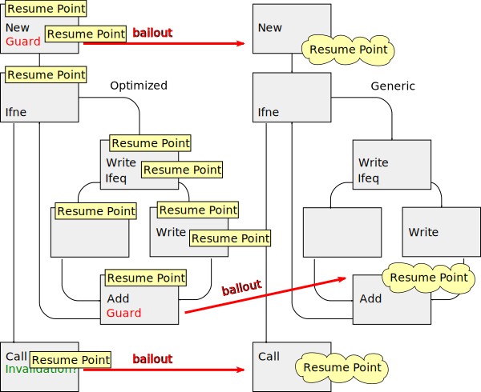
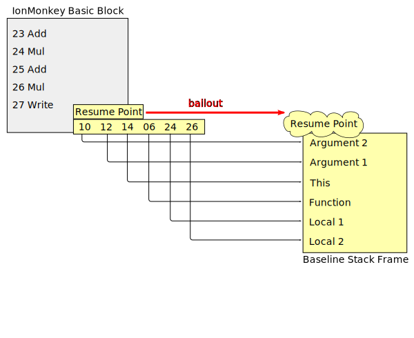
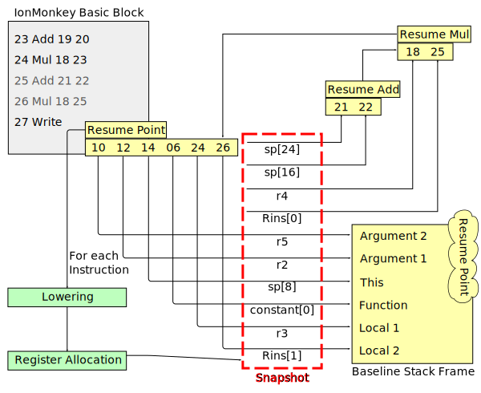
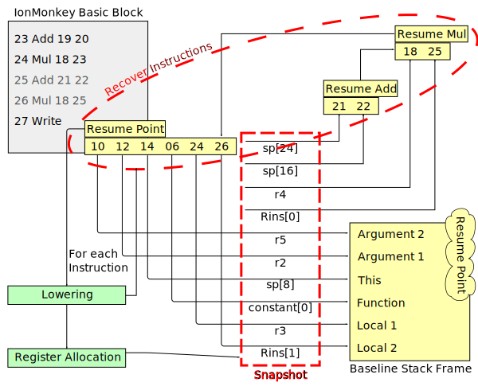

Nicolas B. Pierron [:nbp]
Nicolas B. Pierron [:nbp]
JS Team Meetup 2014
Let's Implement some Crazy Optimizations
- Optimizing JIT principles & Bailouts.
- Current Optimizations.
- Improving Bailouts with Recover Instructions.
- Overview of Possible Optimizations.


Optimizing with Assumptions

Optimizing with Assumptions





if (predicate() /* proved false */)
/* remove code */
…
Unreachable Code Elimination, remove unused branches.
var failed = function (i) {
if (i > 9997)
failed = function (i) { return true; }
return false;
}
if (failed(i) || failed(i))
/* Inlining → Removed by UCE */
Cause invalidation on scripts inlining this function.
function ra(i) {
var x = (-1 >> 1) + 308641 * i;
// ^ Computed with int32s.
failed(i); failed(i);
print(x | 0);
}
UCE → Range Analysis Failure
function ra(i) {
var x = (-1 >> 1) + 308641 * i;
// ^ Computed with doubles.
if (failed(i) || failed(i))
return; /* print(x); */
print(x | 0);
}
UCE prevents Range Analysis optimizations.

Recover Instructions Build

Removing writes is just about adding write instructions to the list of
recover instructions.
→ Implies precise alias analysis.
→ Needed Escape analysis.